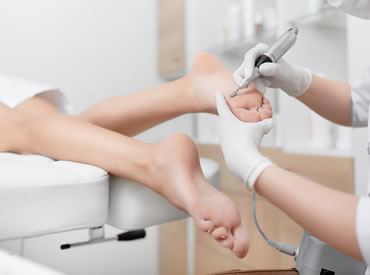
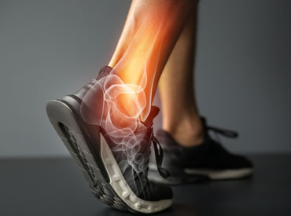
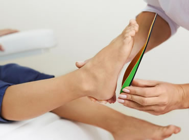
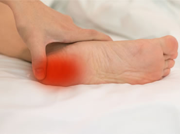

趾甲問題: 灰甲、癬甲、厚甲、指甲倒生(嵌甲) 、 趾甲變形、變形厚甲、陷甲、甲底潰瘍和內生趾甲等。
足部感染: 真菌感染(香港腳) 、疣和急性甲溝炎等。
基本足部護理
皮膚問題: 雞眼、厚皮、水泡、腳跟龜裂、厚繭、香港腳／足癬、疣、皮膚潰瘍、疤痕結繭、靜脈曲張引致皮膚敏感和潰瘍等。趾甲問題: 灰甲、癬甲、厚甲、指甲倒生(嵌甲) 、 趾甲變形、變形厚甲、陷甲、甲底潰瘍和內生趾甲等。
足部感染: 真菌感染(香港腳) 、疣和急性甲溝炎等。

生物力學足部問題(各種足部變形及痛症)
足病診療師為客人檢查雙腳，從而找出常見的生物力學問題，例如: 扁平足、腳拇指外翻、腳趾變形、高弓足、腳跟痛或足底筋膜炎等。

專業護足產品及鞋墊 : 3D掃描鞋墊
提供訂造矯型鞋墊服務，以減低足低下肢的變形及避免尺寸不合問題
糖尿足部評估和護理
提供評估、診斷和治療與糖尿病有關的足患。當完成足部神經和血管的檢查後，診療師會為客人度身設計一套全面的護理療程。假若客人患有“糖尿腳”問題，例如:雙腳麻痺、足部變形或血液循環不良等，診療師亦會提供獨有的護足治療產品。

下肢結構病患等 足部骨骼及軟組織損傷: 足部筋膜炎, 足拇趾外翻, 趾間神經瘤等 肌肉及神經的損傷: 小兒麻痺症及小兒腦癱引起的先天足部變形等
下肢痛症
足痛及相關的下肢疼痛 運動相關的足部問題 髕股骨痛徵候群, 足踝扭傷,下肢結構病患等 足部骨骼及軟組織損傷: 足部筋膜炎, 足拇趾外翻, 趾間神經瘤等 肌肉及神經的損傷: 小兒麻痺症及小兒腦癱引起的先天足部變形等
其他服務
• 長者足部護理• 小兒足部護理 足部發展及有關步行的常見問題：扁平足、內收足、足膝內或外翻等。
• 長期病患者 (糖尿病足及類風濕性關節炎引起的足部變形等問題)
• 足部傷口處理 - 靜脈潰瘍、壓瘡、凍瘡或慢性足部傷口等。
• 懷孕期間的足部問題
• 足科護理教育